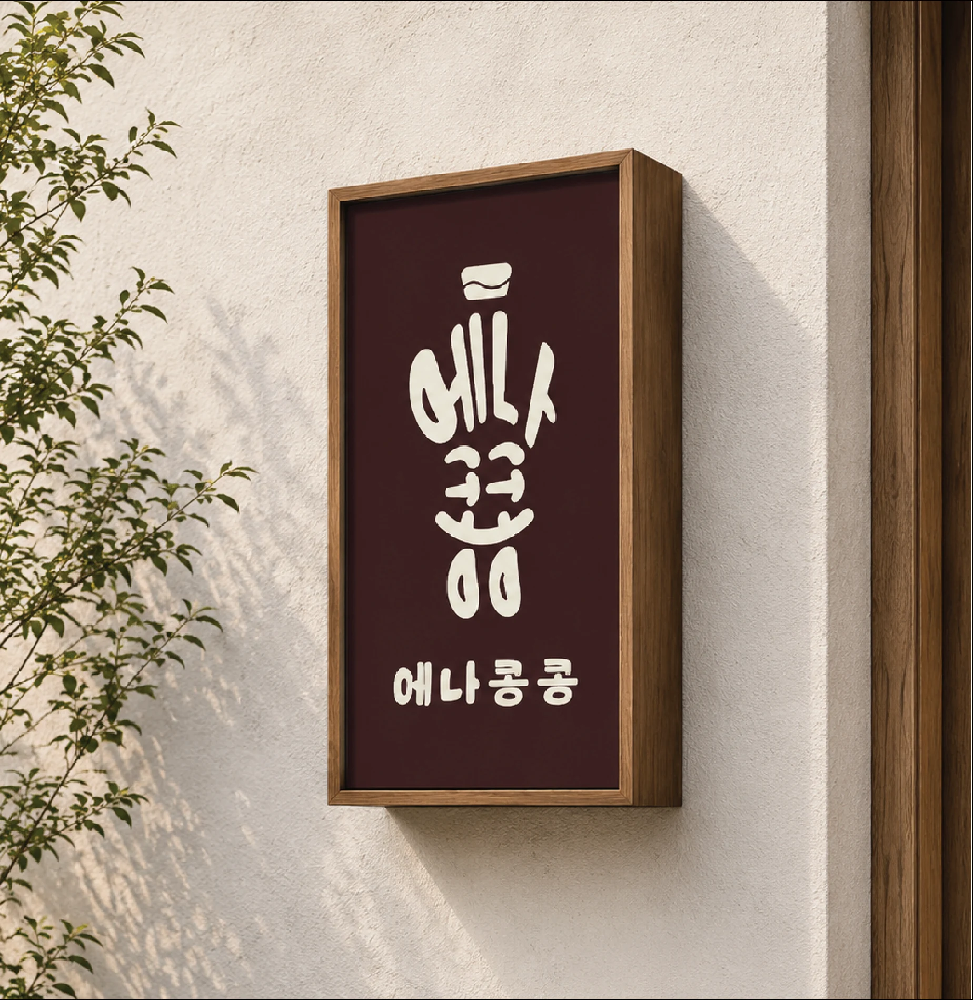
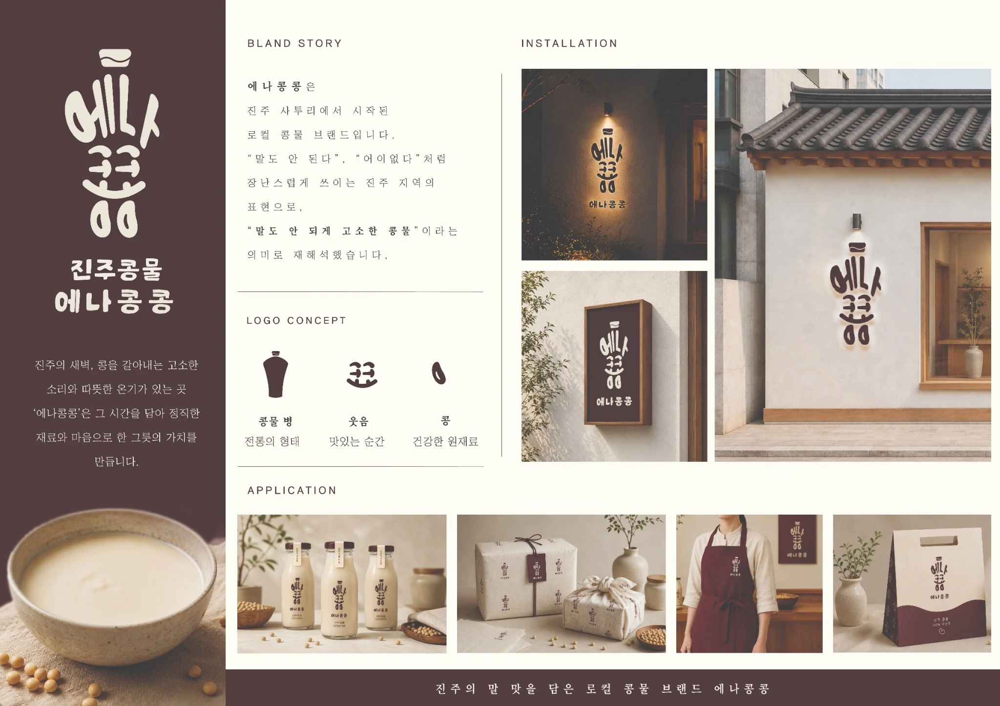
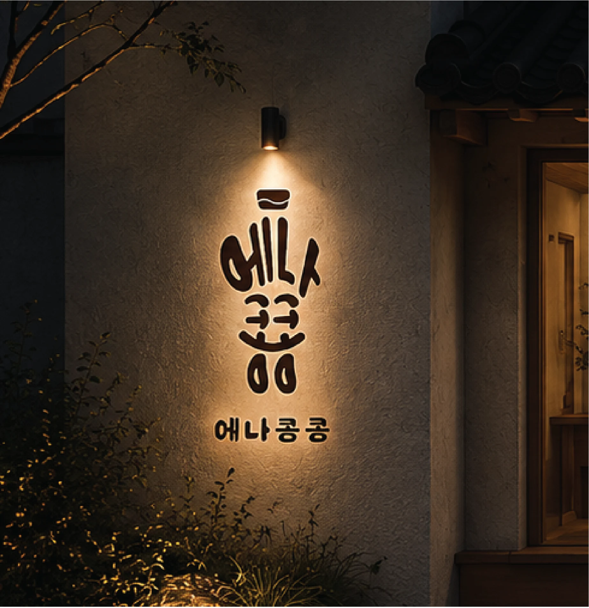

고소한 한 모금
에나콩콩 콩물을 직접 맛보는 시음 경험
진주의 말맛을 담은 로컬 콩물 브랜드,
에나콩콩이 준비한 고소한 첫 만남.
* 본 웹페이지의 행사 일정·장소는 시연용 예시입니다.
“에나콩콩”은 진주에서 장난스럽게 쓰이는 말에서 출발했어요. 친숙한 지역의 표현을 ‘말도 안 되게 고소한 콩물’이라는 새로운 즐거움으로 바꿨습니다.
이번 팝업에서 한 모금의 고소함과 브랜드에 담긴 이야기를 직접 만나보세요.
어떤 경험이 기다릴까요? ↗에나콩콩 콩물을 직접 맛보는 시음 경험

브랜드 이름과 로고에 담긴 로컬 이야기

브랜드 비주얼과 함께 남기는 특별한 기록

콩의 형태, 웃는 표정, 전통 콩물 병의 실루엣을 하나의 로고로. 진주에서 시작된 이야기를 일상의 즐거움으로 전합니다.
토 · 일 / 11:00 – 18:00
상세 위치는 실제 행사 확정 후 안내
시음은 준비 수량 소진 시 종료될 수 있습니다.